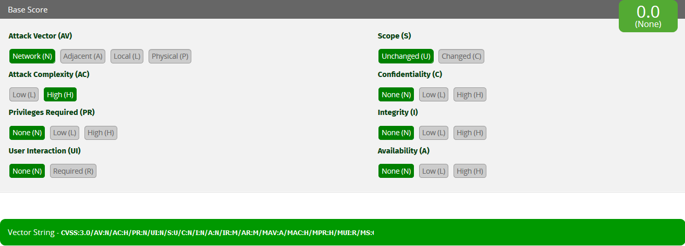

- 00 开篇词 你写的每一行代码，都是你的名片.md.html
- 01 从条件运算符说起，反思什么是好代码.md.html
- 02 把错误关在笼子里的五道关卡.md.html
- 03 优秀程序员的六个关键特质.md.html
- 04 代码规范的价值：复盘苹果公司的GoToFail漏洞.md.html
- 05 经验总结：如何给你的代码起好名字？.md.html
- 06 代码整理的关键逻辑和最佳案例.md.html
- 07 写好注释，真的是小菜一碟吗？.md.html
- 08 写好声明的“八项纪律”.md.html
- 09 怎么用好Java注解？.md.html
- 10 异常处理都有哪些陷阱？.md.html
- 11 组织好代码段，让人对它“一见钟情”.md.html
- 12丨组织好代码文件，要有“用户思维”.md.html
- 13 接口规范，是协作的合约.md.html
- 14 怎么写好用户指南？.md.html
- 15 编写规范代码的检查清单.md.html
- 16丨代码“规范”篇用户答疑.md.html
- 17 为什么需要经济的代码？.md.html
- 18丨思考框架：什么样的代码才是高效的代码？.md.html
- 19 怎么避免过度设计？.md.html
- 20 简单和直观，是永恒的解决方案.md.html
- 21 怎么设计一个简单又直观的接口？.md.html
- 22丨高效率，从超越线程同步开始！.md.html
- 23 怎么减少内存使用，减轻内存管理负担？.md.html
- 24 黑白灰，理解延迟分配的两面性.md.html
- 25 使用有序的代码，调动异步的事件.md.html
- 26 有哪些招惹麻烦的性能陷阱？.md.html
- 27 怎么编写可持续发展的代码？.md.html
- 28 怎么尽量“不写”代码？.md.html
- 29 编写经济代码的检查清单.md.html
- 30丨“代码经济篇”答疑汇总.md.html
- 31 为什么安全的代码这么重要？.md.html
- 32 如何评估代码的安全缺陷？.md.html
- 33 整数的运算有哪些安全威胁？.md.html
- 34 数组和集合，可变量的安全陷阱.md.html
- 35 怎么处理敏感信息？.md.html
- 36 继承有什么安全缺陷？.md.html
- 37 边界，信任的分水岭.md.html
- 38 对象序列化的危害有多大？.md.html
- 39 怎么控制好代码的权力？.md.html
- 40 规范，代码长治久安的基础.md.html
- 41 预案，代码的主动风险管理.md.html
- 42 纵深，代码安全的深度防御.md.html
- 43 编写安全代码的最佳实践清单.md.html
- 44 “代码安全篇”答疑汇总.md.html
- Q&A加餐丨关于代码质量，你关心的那些事儿.md.html
- 结束语 如何成为一个编程好手？.md.html
- 捐赠
32 如何评估代码的安全缺陷？
我自己有一点小小的强迫症，遇到事情，喜欢自己动手整个清楚明白。我的大部分失眠，都要拜这点强迫症所赐。时间永远都不够用。如果上天给我一个机会，我是不是可以借上五百年？其实，借上五百年，时间一定还是不够用的。
我经常被问到三个问题：
有什么事情是你必须要做的？
哪些事情是只有你能做的?
哪些事情是别人可以帮你做的？
这就是一种时间管理的思路，隐含的意思是：
识别并且选择最重要的事情；
确定自己最擅长的事情，全力以赴地做好；
选择你的帮手，充分信任并授权。
评估软件的缺陷就是这个思路运用得最广泛的一个场景。作为程序员，我们需要了解软件存在的问题，以及问题的严重程度。那么，我们该如何评估软件存在的问题，以及代码的安全问题呢？
关注用户感受
软件缺陷的定义方式和衡量方式有很多种。从用户感受的角度出发，定义和计量软件缺陷，是其中一个比较好的、常用的软件缺陷评估体系。我个人比较倾向一种观点，软件缺陷的严重程度应该和用户的痛苦程度成正比。
从用户感受出发，衡量软件缺陷有两个最常用的指标：
缺陷影响的深度，软件缺陷带来的问题的严重性：软件缺陷导致的最严重的问题是什么？
缺陷影响的广度，软件缺陷带来问题的可能性：软件缺陷导致问题出现的频率是多大？
比如说，一个外卖系统只要订餐金额超过32766元就无法提交订单，因为软件系统允许的最大金额为32766元。这种事情 一旦发生，就是一个非常严重的错误（订单无法提交）（影响的深度）。但是，在外卖系统里，金额超过3万元的订单数量应该不多，该错误发生的几率并不大（影响的广度）。
如果我们把每个指标都划分高、低两种程度，就能得到如下四种情况：
高严重性，高可能性；
高严重性，低可能性；
低严重性，高可能性；
低严重性，低可能性。
依据这四种情况，我们就可以定义软件缺陷的优先等级了：
高优先级 （P1）： 高严重性、高可能性；
中优先级 （P2）： 高严重性、低可能性； 低严重性、高可能性；
低优先级 （P3）： 低严重性、低可能性。
- 上述外卖系统的软件缺陷的优先级应该是中等优先级（P2，高严重性、低可能性）。
缺陷，需要从外向内看
假设这个外卖系统有一个bug，订餐金额可以是0或者负数。如果订餐金额是负数，餐厅不仅需要送餐上门，还需要倒贴钱。这可是一个好玩的bug，当然不能坐视不管。
过一段时间，bug修好了。大部分餐厅都能接受新系统。可是有一个商家表达了不同意见。原来他们有一个“寻找美食家”的活动，餐厅不仅不要顾客的钱，还倒贴同等餐费，请客人品尝最新餐品。负数金额，正是他们倒贴钱的“定价”。 美其名曰“你尝，我负”。该商家声称，新系统存在一个严重的缺陷，定价无法使用负数，导致这个活动无法进行。
如果你是这个外卖系统的工程师，这个bug你修不修？
你是否认可和接受这个缺陷报告，背后反映的就是你看待这个软件缺陷的态度。如果从用户感受的角度出发，定义和计量软件缺陷，这就是一个符合条件的bug。这个问题对该商家的影响非常大，无法开展正常的商业活动。但这个问题发生的可能性比较小，大概只有这么一个商家使用负数定价。那么这个软件缺陷的优先级是中等优先级（P2，高严重性、低可能性）。
你看， 这个外卖系统的代码变更本身并不存在真正的缺陷，但是，如果从用户角度来看，又的确存在一个中等优先级的缺陷。我们当然可以认为，这个缺陷应该在用户那里得到校正。但是有时候，用户并没有校正这种缺陷的机会和能力。
你会不会觉得这个例子有点离奇、离谱，甚至有点搞笑？其实处理这种事情，是我日常工作中非常重要的一部分。 一旦Java的接口规范和规范实现发布，我们并不知道在现实世界中，用户如何运用他们的聪明才智，发挥他们的创造性，灵活地使用这些接口和实现。而无论用户怎么使用，在软件升级变更中，我们都没有充分的理由打断用户的应用运转和商业运营。所以软件的升级或者变更，处处充满了乐趣和挑战，步步惊心。
在一个好的软件缺陷评估体系中，不是只有代码错误才会被关注，没有错误的代码，也可能存在需要变更或者改进的“缺陷”。这就是我们要强调的，从用户的感受出发，定义和计量软件缺陷。缺陷，需要从外向内看。
很多时候，程序员认为是严重的缺陷，用户可能一点儿都感受不到；程序员认为无关紧要的事情，放到了用户的使用场景中，可能就是非常严重的事故。从外向内看缺陷，要求我们站在用户的角度思考问题，看待缺陷。这是一个可以让我们深切关注用户感受的视角。从用户视角出发的决策，可以让我们的时间使用得更有市场价值。
细化的优先级
在一定程度上，作为软件的原作者或者维护者，我们被各种各样的软件缺陷包围着，永远存在修补不完的缺陷，永远存在无法修复的问题。上述软件缺陷的优先等级的定义，稍显粗糙。我们可能需要更细致一些的等级划分，以便更好地安排我们的时间和区分做事情的轻重缓急。
如果我们把每个指标都划分高、中、低三种程度，就可以得到九种情况，定义五种优先等级。五种等级，是一个常用的优先级数目。太少了，显得粗糙；太多了，容易迷糊。
第一优先级 （P1）： 高严重性、高可能性；
第二优先级 （P2）： 高严重性、中可能性；中严重性、高可能性；
第三优先级 （P3）： 高严重性、低可能性；中严重性、中可能性；低严重性、高可能性；
第四优先级 （P4）： 中严重性、低可能性；低严重性、中可能性；
第五优先级 （P5）： 低严重性、低可能性。
- 你自己试试看，上面我们讨论过的外卖系统的软件缺陷属于第几优先级？
优先级的灵活性
软件缺陷优先等级的定义是为了帮助我们更好地解用户的感受程度，以及安排时间和处理事情。
由于时间和资源有限，在大多数情况下，特别是对于职业的程序员来说，并不能在一定时间内修复所有的缺陷，满足所有的变更要求。
实际工作中，我们有时候需要调节软件缺陷的优先等级，比如说：
如果已经存在应对办法，优先等级可以下调；
如果软件缺陷引起广泛的公开关注，优先等级应该上调；
如果软件缺陷影响了重要的客户，优先等级应该上调；
如果软件缺陷影响了重要的商业运营，优先等级应该上调。
对于一般的软件缺陷管理，五个等级是一个恰当的优先级分割。然而，除非特别注明，仅从优先级别来看，我们并不清楚P3缺陷的严重性是高是低，或者发生的可能性是高是低，而且问题的严重性在哪儿体现，可能性又是如何度量的？ 这些也都是模糊的地方，可能受主观影响比较大。但是有一些软件缺陷，需要对这些问题有一个更加清晰的认识和感受，比如软件安全漏洞。应该如何评估软件的安全漏洞？ 我们会在稍后的接着聊这个话题。
管理好自己的时间
好了，我们定义了软件缺陷的优先级，是时候看看如何使用它管理我们的时间了。还记得开头提到的三个问题吗？
1.有什么事情是你必须要做的？
P1的事情需要我们立即全力以赴、必须完成；P2的事情需要我们协调资源，尽快完成；P3的事情需要我们密切关注，尽量完成。
2.哪些事情是只有你能做的?
只有你能够修复的bug，你可以记到自己名下，负责修复这些缺陷。
3.哪些事情是别人可以帮你做的？
适合别人修复的bug，如果还没有记到别人名下，你可以琢磨下谁是最合适的人选，然后和他商量，看他有没有时间，愿不愿意负责这个缺陷。当然，别人也可能会问你愿不愿意修复另外一些缺陷。
相信我，大部分情况下，在得到足够的尊重以及有适当时间的前提下，人们愿意做些有意义的事情。
如果P1、P2、P3的问题修复完了，你就可以放心休假去了。休完假，充分从疲劳中恢复过来后，你就可以考虑，是不是可以看看P4和P5的问题了。
安全漏洞，需要大范围协作
在软件缺陷中，安全漏洞是一个奇异的存在。软件的安全漏洞，常常会导致非常严重的后果，以及恶劣的影响，甚至会直接导致一个公司的破产。
由于编写安全代码本身的挑战性，以及消除安全漏洞的复杂性，业界通常需要进行大范围的合作，以便准确、快速、周全地解决安全缺陷问题。大规模协作需要标准的描述语言，以及对安全问题的准确认知。通用缺陷评分系统（CVSS）就是一种评判安全缺陷优先等级的标准。
对于安全缺陷，我们还可以使用上面提到过的严重性和可能性两种指标进行衡量。对这两种指标进行细化，才能更符合安全缺陷的特点。
对于安全缺陷的严重性，有四个互相独立的测量维度（量度）：
对私密性的影响（Confidentiality）
对完整性的影响（Integrity）
对可用性的影响（Availability）
对授权范围的影响（Authorization Scope）
题外话：- 私密性、完整性以及可用性，是描述信息安全的最基本的三个元素。- 私密性指的是数据未经授权，不得访问，解决的是“谁能看”的问题。- 完整性指的是数据未经授权，不得更改，解决的是“谁能改”的问题。- 可用性值得是数据经过授权，可以访问，解决的是“可以用”的问题。
对于安全缺陷的可能性，有四个互相独立的测量维度（量度）：
安全攻击的路径（Attack Vector）
安全攻击的复杂度（Attack Complexity）
安全攻击需要的授权（Privileges Required）
安全攻击是否需要用户参与（User Interaction）
由于这些测量维度都是相互独立的，二维的平面图已经不足以表示这么多维度了。通用缺陷评分系统使用了标识符系统和计分系统，通过标识符来标识测量维度的指标，通过十分制的计分来衡量安全问题的严重程度。由于测量维度的增多以及评分计算的复杂性，我们通常使用工具来记录和查看安全缺陷问题的等级。
比如，本文评审案例的那个缺陷，并不是一个安全问题。 如果我非要使用通用缺陷评分系统来描述它，这个计分应该是0.0分，直观描述看起来如下图：
- 我们曾经谈到过”goto fail“这个安全问题，如果使用通用缺陷评分系统，计分是7.2，直观描述如下图所示：
- 今天我给你介绍了通用缺陷评分系统的一些最基本的概念，先帮你形成一个基本的印象，算是一块敲门砖。你可以进一步了解通用缺陷评分系统的有关规范和工具。
安全漏洞和软件缺陷优先级
为了方便管理，安全漏洞和软件缺陷通常使用同一个代码缺陷管理系统。我们要注意两点：第一点是安全漏洞细节不可泄露；第二点是和普通软件缺陷相比，安全漏洞要优先考虑。
安全漏洞细节不可泄漏
我们反复强调过，软件的安全漏洞常常会导致非常严重的后果，以及恶劣的影响。最糟糕的是，我们并不能总是预料到谁可以利用这些漏洞，以及由此带来的后果有多严重。所以处理安全漏洞的态度，一定要保守。
安全漏洞不能像普通的代码缺陷那样，可以公开细节、公开讨论。相反，安全漏洞的知情人员一定要控制在一个尽可能小的范围内，知道的人越少越好。如果安全漏洞和普通缺陷共享一个代码缺陷管理系统，一定要想办法做好安全漏洞信息的权限管理。
安全漏洞要优先修复
一旦发现一个安全漏洞，不管是来源于外部情报，还是内部发现，我们都要考虑最快地修复，不要等待，更不要拖沓。即使我们全力以赴地修复，在系统修复之前，安全攻击随时都有可能发生。我们能做的，就是尽最大努力，缩短这段时间。
所以，大部分的安全漏洞问题，都是属于P1级别的缺陷。有一小部分深度防御的安全问题，优先级可以是P2。安全问题，不要使用P3及以下优先级。另外在所有的同级缺陷中，安全问题要优先考虑。
小结
今天，我们讨论了如何评估软件存在的问题。软件的缺陷问题，要考虑缺陷影响的深度（严重性）和广度（可能性）。为了更好地认识安全漏洞，我们还要了解安全缺陷的评价标准。
有了软件缺陷的优先级，我们就可以更好地管理我们的工作和时间。下面的三个问题可以帮助你做好安排：
有什么事情是你必须要做的？
哪些事情是只有你能做的?
哪些事情是别人可以帮你做的？
一起来动手
我们要想掌握安全编码的技术，熟练修复软件漏洞的实践，需要先过三道关。
第一道关，是意识（Conscious）。也就是说，要意识到安全问题的重要性，以及意识到有哪些潜在的安全威胁。
第二道关，是知晓（Awareness）。要知道软件有没有安全问题，安全问题有多严重。
第三道关，是看到（Visible）。要了解是什么样的问题导致了安全漏洞，该怎么修复安全漏洞。
比如我们上一次谈到的Equifax公司的信用记录泄漏的安全问题，首席信息官和首席安全官之所以退休，我们从外部可以猜测到的原因，就是意识不够强烈，没有及时更新安全修复。之所以没有及时地更新，大概率是不知道有安全问题，或者不知道安全问题有多严重。
系统管理员，最少需要过两关（意识和知晓）；而软件开发工程师，需要过三关（意识、知晓和看到）。这三关并不容易过。
记得我们前面讨论的“安全漏洞细节不可泄漏”的实践吗？知道安全漏洞的人越少越好。这样保守的安全防范实践，和培养优秀的软件工程师所要求的实践，就成了悖论。
掌握编码安全技术，要培养意识，要知道得更多，要看到问题的细节。而“安全漏洞细节不可泄漏”的实践，却要求尽量不要公开安全细节。但是看不到细节的时候，我们就很难掌握这些技术，很难认识到威胁的严重性，从而阻碍了安全意识的培养。面对这一对几乎不可调和的矛盾，我们该怎么办？！
有数据披露，2019和2020两年，全球信息安全专业人员的缺口会有300多万。资源不足，需求强劲，我们怎样才可以学好安全代码的编写技能，提升自己的价值？
欢迎你在留言区留言、讨论，分享你的经验。我们一起来学习、思考这些老难老难的现实问题！
如果你觉得这篇文章有所帮助，欢迎点击“请朋友读”，把它分享给你的朋友或者同事。
© 2019 - 2023 Liangliang Lee. Powered by gin and hexo-theme-book.